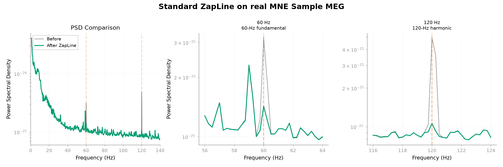

Note
Go to the end to download the full example code.
Removing 60-Hz line noise and its harmonic from real MEG with ZapLine#
Can standard ZapLine attenuate a 60-Hz line-noise component and its 120-Hz harmonic in a real multichannel MEG recording while limiting off-target spectral change? The MNE Sample gradiometers provide a compact real-data example with no known clean neural reference, so attenuation and spectral preservation are reported as separate quantities.
ZapLine combines spectral and spatial filtering for multichannel recordings [1]. A reduced line peak demonstrates artifact attenuation in this recording; an off-line spectral change is only a preservation control and does not establish that neural structure was preserved. A useful result should attenuate the narrow line components without producing the deep spectral hole expected from suppressing an entire frequency band.
References#
Load a compact MNE Sample MEG recording#
import mne
import numpy as np
from mne_denoise.qa import below_noise_distortion_db, suppression_ratio
from mne_denoise.viz import plot_psd_zoom_comparison
from mne_denoise.zapline import ZapLine
sample_path = mne.datasets.sample.data_path()
raw = mne.io.read_raw_fif(
sample_path / "MEG" / "sample" / "sample_audvis_raw.fif",
preload=False,
verbose="ERROR",
)
raw.pick("grad", exclude="bads").crop(0.0, 30.0).load_data()
raw.resample(300.0, verbose="ERROR")
Reading 0 ... 18018 = 0.000 ... 29.999 secs...
Fit standard ZapLine and evaluate real-data endpoints#
n_select=1 is a conservative operating choice for this recording, not a
universal recommendation; the appropriate component count is data-dependent.
The explicit count demonstrates standard ZapLine’s spatial/spectral cleaning
operation without conflating it with automatic component selection.
model = ZapLine(
sfreq=raw.info["sfreq"],
line_freq=60.0,
n_select=1,
n_harmonics=2,
verbose=False,
)
cleaned = model.fit_transform(raw)
# Use the same MNE PSD settings before and after cleaning. The public QA
# functions require the resulting arrays, while the Raw objects remain the
# inputs to the estimator and visualization.
n_fft = int(round(raw.info["sfreq"] * 4.0))
spectrum_before = raw.compute_psd(
fmin=1.0,
fmax=140.0,
n_fft=n_fft,
verbose="ERROR",
)
spectrum_after = cleaned.compute_psd(
fmin=1.0,
fmax=140.0,
n_fft=n_fft,
verbose="ERROR",
)
freqs = spectrum_before.freqs
psd_before = spectrum_before.get_data(return_freqs=False)
psd_after = spectrum_after.get_data(return_freqs=False)
line_suppression_60 = suppression_ratio(
freqs,
psd_before,
psd_after,
target_freq=60.0,
bandwidth=2.0,
)
line_suppression_120 = suppression_ratio(
freqs,
psd_before,
psd_after,
target_freq=120.0,
bandwidth=2.0,
)
# The QA helper counts *additional* harmonics, so 1 excludes both the 60-Hz
# fundamental and its 120-Hz harmonic.
off_band_distortion = below_noise_distortion_db(
freqs,
psd_before,
psd_after,
exclude_freq=60.0,
exclude_bw=5.0,
fmin=2.0,
fmax=140.0,
n_harmonics=1,
)
mean_psd_before = psd_before.mean(axis=0)
mean_psd_after = psd_after.mean(axis=0)
target_floor_db = {}
for target in (60.0, 120.0):
target_idx = int(np.argmin(np.abs(freqs - target)))
flank_mask = ((freqs >= target - 3.0) & (freqs <= target - 1.0)) | (
(freqs >= target + 1.0) & (freqs <= target + 3.0)
)
local_floor = np.median(mean_psd_after[flank_mask])
target_floor_db[target] = 10.0 * np.log10(mean_psd_after[target_idx] / local_floor)
print(f"MEG gradiometer channels: {len(raw.ch_names)}")
print(f"Recording: {raw.times[-1]:.1f} s at {raw.info['sfreq']:.1f} Hz")
print(f"Components removed: {model.n_removed_}")
print(f"ZapLine harmonics: {model.n_harmonics_}")
print(f"60-Hz suppression: {line_suppression_60:.2f} dB")
print(f"120-Hz suppression: {line_suppression_120:.2f} dB")
print(
"Median off-line-band spectral distortion "
f"(preservation control): {np.median(off_band_distortion):.2f} dB"
)
print(
"Cleaned 60-Hz target relative to local flank floor: "
f"{target_floor_db[60.0]:.2f} dB"
)
print(
"Cleaned 120-Hz target relative to local flank floor: "
f"{target_floor_db[120.0]:.2f} dB"
)
print("The spectral control is not a clean neural ground truth.")
MEG gradiometer channels: 203
Recording: 30.0 s at 300.0 Hz
Components removed: 1
ZapLine harmonics: 2
60-Hz suppression: 0.52 dB
120-Hz suppression: 1.61 dB
Median off-line-band spectral distortion (preservation control): 0.10 dB
Cleaned 60-Hz target relative to local flank floor: 1.16 dB
Cleaned 120-Hz target relative to local flank floor: 0.90 dB
The spectral control is not a clean neural ground truth.
Inspect the full spectrum and harmonic neighborhoods#
plot_psd_zoom_comparison(
freqs,
mean_psd_before,
freqs,
mean_psd_after,
series_name="After ZapLine",
title="Standard ZapLine on real MNE Sample MEG",
zoom_freqs=np.array([60.0, 120.0]),
zoom_annotations=[
"60-Hz fundamental",
"120-Hz harmonic",
],
fmax=140.0,
zoom_half_width_hz=4.0,
show=False,
)

<Figure size 2400x800 with 3 Axes>